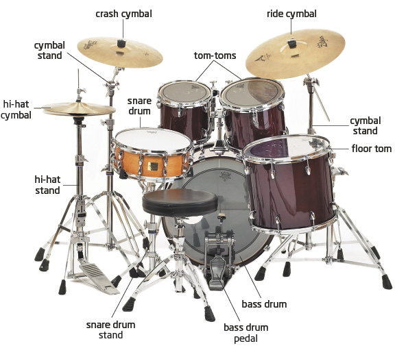

Bass and Snare Drum: Bass(Kick) and Snare drum's main purpose is form the rhythm.
Hi-hat Cymbal: Hi-hat acts as a metronome. Also, hi-hat decorates snare drum and kick.
Crash Cymbal and Toms: They are used to decorate the rhythm, and making attacks.
Right Cymbal: Right Cymbal is used for both type, like hi-hat or crash.
Next Lesson
Lessons